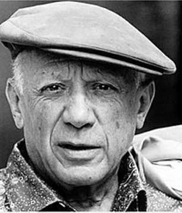

(Pablo Ruiz Picasso; Málaga, 1881 - Moulins, Francia, 1973) Pintor español. La trascendencia de Picasso no se agota en la fundación del cubismo, revolucionaria tendencia que rompió definitivamente con la representación tradicional al liquidar la perspectiva y el punto de vista único. A lo largo de su dilatada trayectoria, Pablo Picasso exploró incesantemente nuevos caminos e influyó en todas las facetas del arte del siglo XX, encarnando como ningún otro la inquietud y receptividad del artista contemporáneo. Su total entrega a la labor creadora y su personalidad vitalista, por otra parte, nunca lo alejarían de los problemas de su tiempo; una de sus obras maestras, el Guernica (1937), es la mejor ilustración de su condición de artista comprometido.
A finales de 1906, Pablo Picasso empezó a trabajar en una composición de gran formato que iba a cambiar el curso del arte del siglo XX: Les demoiselles d'Avignon. En esta obra cumbre confluyeron numerosas influencias, entre las que cabe citar como principales el arte africano e ibérico y elementos tomados de El Greco y Cézanne. Bajo la constante influencia de este último, y en compañía de otro joven pintor, Georges Braque, Pablo Picasso se adentró en una revisión de buena parte de la herencia plástica vigente desde el Renacimiento, especialmente en el ámbito de la representación pictórica del volumen. Las tramas geométricas eliminan la profundidad espacial e introducen el tiempo como dimensión al simultanear diversos puntos de vista: era el inicio del cubismo.
En 1912 introdujeron un elemento de flexibilidad en forma de recortes de papel y otros materiales directamente aplicados sobre el lienzo, técnica que denominaron collage. La admisión en el exclusivo círculo del cubismo del pintor español Juan Gris desembocó en la etapa sintética de dicho estilo, marcado por una gama cromática más rica y la multiplicidad matérica y referencial.
El estallido de la Guerra Civil española, preludio de la Segunda Guerra Mundial, lo empujó a una mayor concienciación política, fruto de la cual es una de sus obras más universalmente admiradas, el mural de gran tamaño Guernica (1937). La reducción al mínimo del cromatismo, el descoyuntamiento de las figuras y su desgarrador simbolismo conforman una impresionante denuncia del bombardeo de la aviación alemana, que el 26 de abril de 1937 arrasó esta población vasca en una acción de apoyo a las tropas del general golpista Francisco Franco. En 1943 conoció a Françoise Gilot, con la que tendría dos hijos, Claude y Paloma. Tres años más tarde, Pablo Picasso abandonó París para instalarse en Antibes, donde incorporó la cerámica a sus soportes predilectos.
Entre 1915 y mediados de la década de 1920, Picasso fue abandonando los rigores del cubismo para adentrarse en una nueva etapa figurativista, en el marco de un reencuentro entre clasicismo y el creciente influjo de lo que el artista denominó sus «orígenes mediterráneos». Casado desde 1919 con la bailarina rusa Olga Koklova y padre ya de un hijo, Paulo, Pablo Picasso empezó a interesarse por la escultura a raíz de su encuentro en 1928 con el artista catalán Julio González; entre ambos introdujeron importantes innovaciones, como el empleo de hierro forjado. En 1935 nació su hija Maya, fruto de una nueva relación sentimental con Marie-Therèse Walter, con quien Pablo Picasso convivió abiertamente a pesar de seguir casado con Olga Koklova; a partir de 1936, ambas debieron compartir al pintor con una tercera mujer, la fotógrafa Dora Maar.
En la década de 1950 realizó numerosas series sobre grandes obras clásicas de la pintura, que reinterpretó a modo de homenaje. En 1961 Pablo Picasso contrajo segundas nupcias con Jacqueline Roque; sería su última relación sentimental de importancia. Convertido ya en una leyenda en vida y en el epítome de la vanguardia, el artista y Jacqueline se retiraron al castillo de Vouvenargues, donde el creador continuó trabajando incansablemente hasta el día de su muerte.